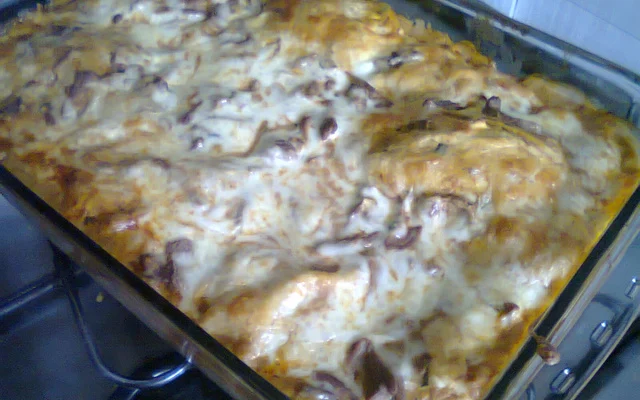

Ingredientes
- 1 cebola pequena inteira
- 1 dente de alho
- 2 colheres de sopa de óleo
- 10 g manteiga
- 1 kg de carne bovina cortada em iscas finas (carne macia para bife, pode ser filé mignon, alcatra ou outra)
- 1 caldo de carne sabor picanha
- 3 tomates maduros
- 1/2 sachê (170 g) molho de tomate pronto com manjericão
- 300 ml de água quente
- Cheiro verde e sal a gosto
- 1 caixinha creme de leite
- 1 pacote massa fresca para lasanha
- 600 g queijo mussarela ralada
Passo a Passo
- Em uma panela grande coloque o óleo, a manteiga e a cebola dourando um pouco.
- Em seguida coloque o alho e a carne, fritando até secar o caldo que se formará.
- Em um recipiente esmague o caldo de carne com um pouco de água quente para desmanchar e despeje na panela.
- Acrescente o tomate e frite até murchar.
- Coloque o molho pronto, corrija o sal e acrescente a água, deixe ferver bem, mas não deixe reduzir muito, pois precisa de bastante molho.
- Desligue o fogo e acrescente o cheiro verde e o creme de leite, misturando bem para incorporar.
- Montagem: Faça camadas intercalando o estrogonofe, a massa e o queijo, nessa ordem, finalizando com o queijo.
- Asse no forno preaquecido por 30 minutos, fogo médio, cuidando para não queimar o queijo.
- Dica: pode acrescentar champignon ao estrogonofe, também fica delicioso.